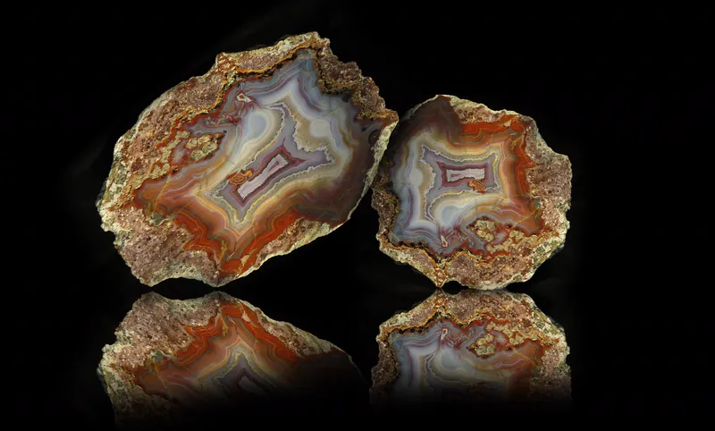
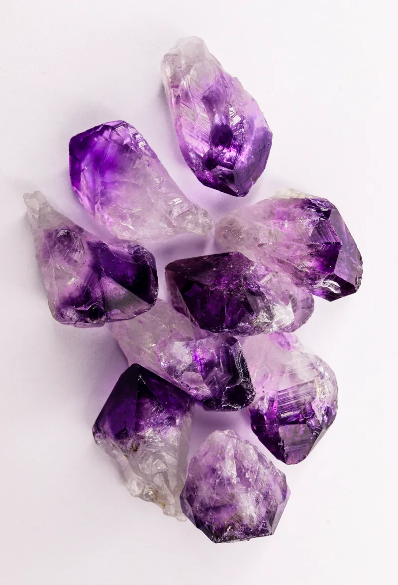
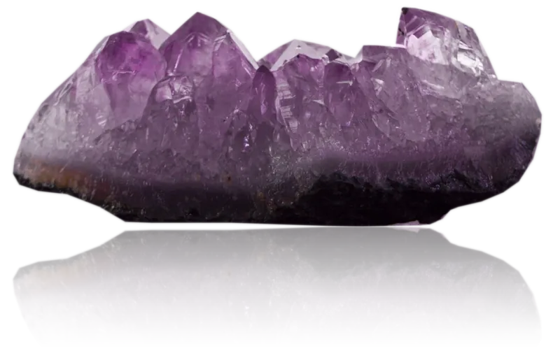
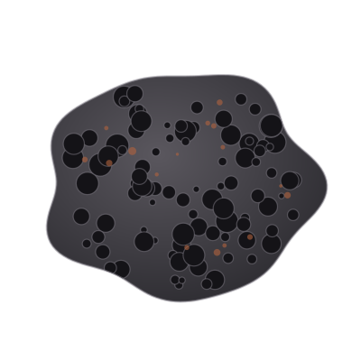
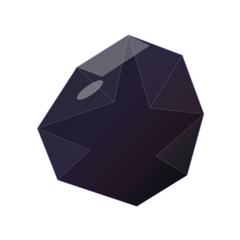
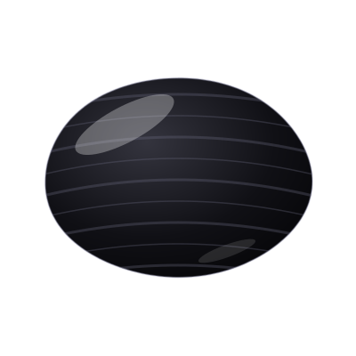
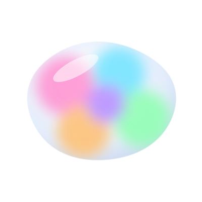
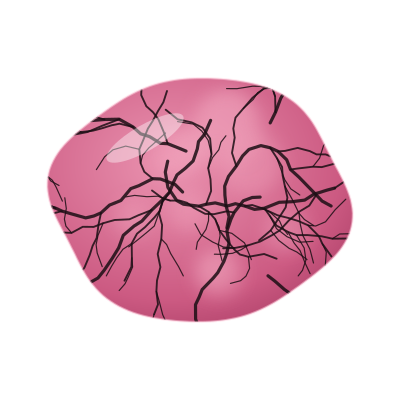

Kamienie naturalne
Krąg wiedzy
Agat
mistrz harmonii!
Uspokaja, dodaje odwagi, pewności siebie i optymizmu. Chroni przed negatywnymi wpływami i otwiera nasze blokady. Dodaje również siły fizycznej i psychicznej. Korzystnie wpływa na problemy żołądkowe i reguluje gospodarkę hormonalną.

Akwamaryn
klejnot wiecznej młodości i szczęścia!
Wzmacnia aurę i świadomość, dodaje odwagi.
Pomaga oczyścić umysł z negatywnych myśli i porządkuje chaos wewnętrzny.
Pomaga w problemach skórnych, alergiach i bólach głowy.
Amazonit
bohaterka kobiet, strażniczka równowagi!
Redukuje stres, łagodzi lęki oraz harmonizuje emocje.
Zapewnia szczęście i dobrobyt.
Szczególnie dobrze odnajduje się w towarzystwie kobiet – jest dla nich wsparciem i pomocą.
Ametyst
kamień harmonii i relaksu
Pomaga wyciszyć umysł, redukuje niepokój, lęki i objawy stresu. Tworzy tarczę energetyczną. Pomaga również pozbyć się uciążliwej migreny, bólów głowy. Tradycyjnie uznawany za kamień ułatwiający wyzwolenie się z nałogów.


Apatyt
mistrz motywacji!
Kamień motywacji, pozytywnego nastawienia i kreatywności.
Pomaga spełniać marzenia, motywuje i usprawnia komunikację między ludźmi.
Poprawia pamięć i reguluje ciśnienie krwi.
Awenturyn
magiczny klucz do świata możliwości!
Przyciąga szczęście, dobrobyt i obfitość, szczególnie w sprawach finansowych.
Przynosi szczęście i otwiera na nowe możliwości.
Pomaga żyć w harmonii, obfitości i spokoju.
Bawole oko
Uziemiający kamień, przyciągający obfitość i ochronę
Wpływa na poczucie bezpieczeństwa i pewności siebie. Oddala od nas wątpliwości i negatywne myśli. Pobudza pracowitość, zaradność i wytrzymałość na sytuacje stresowe.
Black stone
kamień zdeterminowanych
Potężny talizman ochronny, który wzmacnia siłę woli, pewność siebie i odporność na stres. Zwiększa determinację i zdolność do podejmowania trudnych decyzji.
Chryzokola
kamień spokoju i kobiecej energii
Wzmacnia kobiecą energię, dodaje cierpliwości i uspokaja. Negatywne myśli zamienia na pozytywną energię. Poprawia nastrój, łagodzi niepokój, wspomaga prawidłowe działanie tarczycy i korzystnie wpływa na przebieg ciąży.
Cytryn
Opis tego kamienia pojawi się wkrótce.
Granat
klejnot silnej energii
Działa silnie regenerująco, przynosi harmonię. Uważany za kamień miłości, umacnia wierność i zaufanie w związkach. Pozwala odnaleźć swoją pasję. Pomocny w leczeniu depresji, wspomaga pracę nerek i serca.
Jadeit
kamień mądrości
Równoważy emocje, przynosi spokój i pomaga w podejmowaniu decyzji. Odpiera uroki i złą energię, chroni przed wypadkami oraz sprzyja długowieczności. Dodaje pewności siebie i optymizm. Wspomaga usuwanie toksyn, łagodzi bóle kręgosłupa.
Jaspis
królowa wśród kamieni
Działa antystresowo, koi, uspokaja i wspiera, pomaga uwolnić się od stresu i konfliktów. Ułatwia kontakty międzyludzkie. Chroni przed negatywną energią,
Kamień górski
kamień oczyszczający
Uważany za najsilniejszy kamień oczyszczający i ochronny, działający jak energetyczna tarcza.
Wyostrza zmysły i emocje, pobudza dobre myśli.
Pomocny w problemach skórnych.
Kamień słoneczny
pozytywna bateria
Minerał radości i pozytywnej energii, który dodaje optymizmu i pewności siebie. Wspiera w stanach obniżonego nastroju. Energetyzuje i pobudza do działania.
Karneol
kamień turbo-mocy!
Energetyzuje, motywuje, dodaje odwagi i wzmacnia ambicję.
Wspiera aktywność i działanie w każdej sferze życia.
Wzmacnia witalność, poprawia krążenie krwi i wspomaga metabolizm.
Lapis lazuli
boski twór
Kamień duchowy, silnie inspiruje, przynosi harmonię. Łagodzi stres. Wzmacnia on układ odpornościowy i wspomaga dobry i zdrowy sen.
Lawa wulkaniczna
gorący przewodnik
Pomaga w odzyskaniu równowagi psychicznej, stabilizuje emocje i ułatwia "uziemienie".
Pomaga pokonywać trudności uwolnić się od negatywnych emocji i toksycznych nawyków.

Obsydian
niszczyciel demonów przeszłości
Potężny kamień ochronny, który absorbuje negatywną energię. Pomaga uwalniać zablokowane emocje i traumy oraz zwiększa jasność umysłu.
Otwiera na nową wiedzę i doświadczenia.

Onyks
klejnot magów i czarnoksiężników
Kamień siły, ochrony i równowagi emocjonalnej. Wspiera rozwój duchowy, przynosi harmonię i balans.
Pomaga redukować stres, poprawiać koncentrację i przyciągać szczęście.

Opal
kamień przewodnik
Pomaga znaleźć właściwą ścieżkę życiową.
Przynosi spokój i równowagę energetyczną.
Dodaje kreatywności i szczęścia.
Korzystnie wpływa na układ odpornościowy.

Rodonit
kamień leczący serce
Wspiera w procesie budowania bezwarunkowej miłości, empatii i umiejętności wybaczania sobie i innym. Sprzyja budowaniu zdrowych więzi i otwieraniu się na innych ludzi.

Rubin
klejnot serca
Jest symbolem namiętności, pożądania i miłości.
Wzmacnia energię i siłę życiową.
Dodaje optymizmu i odwagi do kierowania własnym życiem.
Wspiera prawidłowe działanie serca.
Turmalin
Opis tego kamienia pojawi się wkrótce.
Tygrysie oko
amulet rekinów biznesu!
Chroni przed negatywnymi wpływami i złą energią wampirów energetycznych.
Wsparcie w biznesie i karierze.
Przynosi szczęście i optymizm.
Uwalnia od kompleksów i dodaje pewności siebie.
Unakit
Kamień uwolnienia
Wspomaga osiągnięcie równowagi. Wspiera harmonię emocjonalną. Pomaga również w spełnieniu marzeń. Wyzwala wewnętrzną moc i pewność siebie. Uważany za kamień długotrwałych, szczęśliwych relacji.
Nie znaleziono pasującego kamienia.